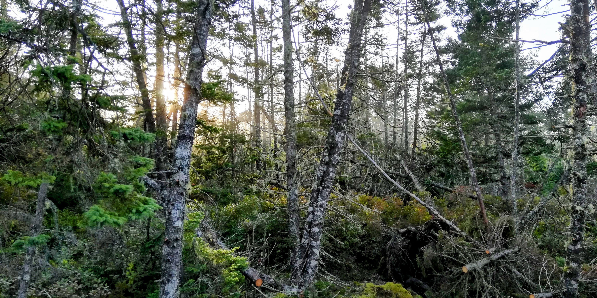
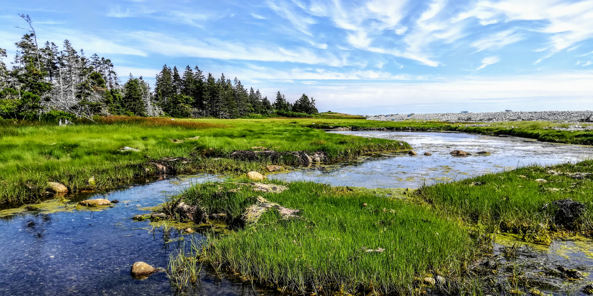
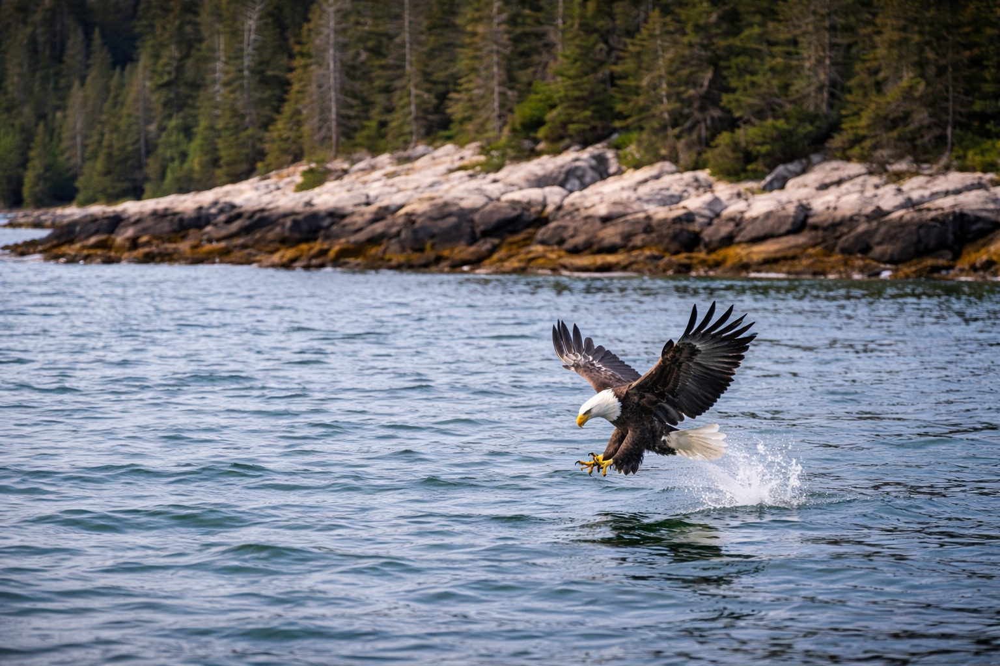
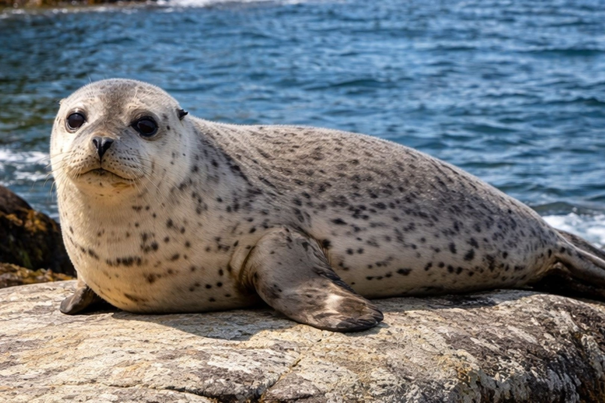
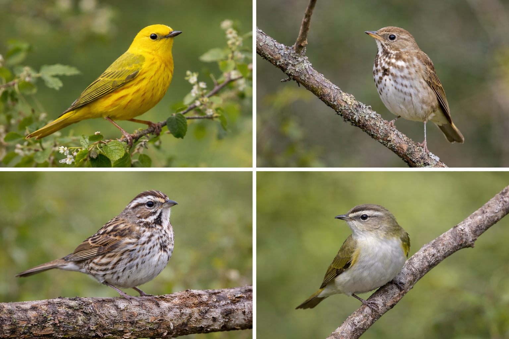
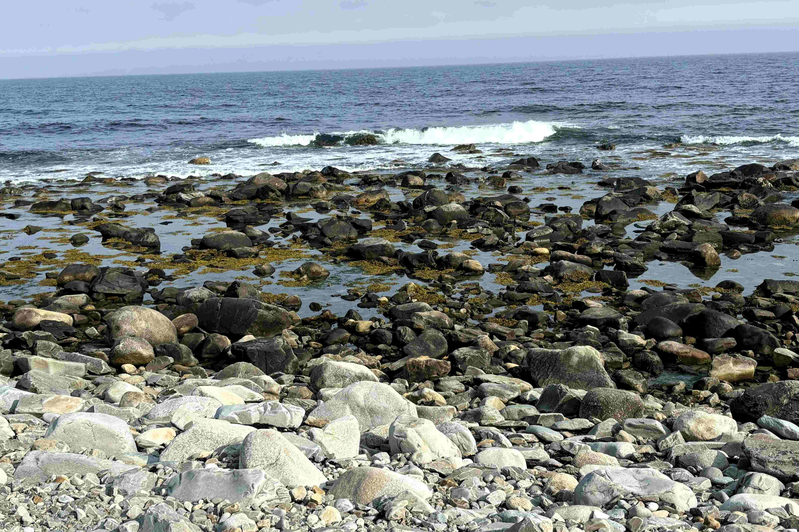
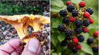
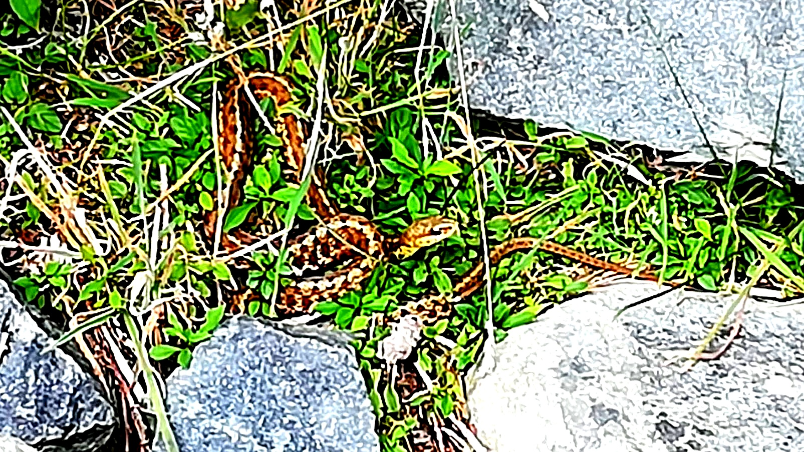
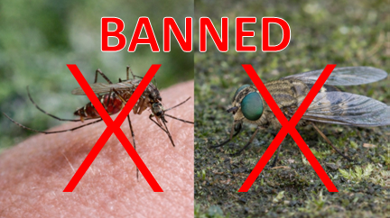

Acadian forest, coastal bogs, nesting bald eagles, harbour seals,
and an intertidal zone teeming with life. McNutt's Island is a landscape
worth knowing and worth protecting.
The Forest
Acadian Forest
McNutt's Island supports a classic Acadian forest — a mixed forest type unique
to the Maritime provinces, combining boreal and deciduous species in a mosaic
shaped by glaciation, climate, and centuries of succession.
Red spruce and balsam fir dominate the interior, with yellow birch, sugar maple,
and red maple in the more sheltered areas. White pine stands tall on the drier
ridges. The forest floor is a deep carpet of sphagnum moss, ferns, and the
occasional carnivorous sundew.
Much of the island's forest has never been logged commercially, giving it a
structural complexity — standing deadwood, downed logs, multilayered canopy —
that is increasingly rare on the Nova Scotia mainland.

Wetlands
Bogs & Wetlands
The island's interior contains extensive bog ecosystems — peat-forming wetlands
that are among the most carbon-dense ecosystems on the planet. Sphagnum mosses
grow in great hummocks, their living surfaces bright green and gold.
Pitcher plants, sundews, and bog laurel grow here alongside leatherleaf and
Labrador tea. These carnivorous plants have evolved to thrive in nutrient-poor,
acidic conditions — catching insects rather than absorbing nutrients from soil.
The bogs are also critical habitat for nesting waterfowl and amphibians,
and they filter water flowing toward the harbour. Their intact condition
makes McNutt's Island an important reference ecosystem for the region.

The Living Island
What You'll Find Here

Bald Eagles
Bald eagles nest on McNutt's Island and are a frequent sight along the shoreline
and over the harbour. Nova Scotia has one of the highest bald eagle densities
in Eastern North America, and the island's undisturbed forest provides ideal
nesting habitat.
McNutt's Island hosts multiple active bald eagle nests in its mature red spruce
and balsam fir. Eagles mate for life and return to the same nest year after year,
adding material until nests can reach two metres across and weigh hundreds of
kilograms. The island's undisturbed old-growth structure — standing deadwood,
large-diameter trees, unbroken canopy — provides the secure, high nest sites
they require. Nova Scotia's population of roughly 600–700 breeding pairs is one
of the densest in eastern North America, a recovery story from the DDT era of
the 1960s and '70s. Watching a resident eagle course the shoreline at low tide,
hunting for fish and waterfowl, is one of the island's most reliable spectacles.

Harbour Seals
Harbour seals haul out on the island's cobble beaches and exposed ledges,
particularly in late summer and fall. They feed on the abundant fish in
Shelburne Harbour and are often visible from the lighthouse point.
The Atlantic harbour seal (Phoca vitulina concolor) is the most
commonly encountered marine mammal on McNutt's Island. Individuals and small
groups haul out regularly on the island's eastern cobble beaches and offshore
ledges, particularly during the moult in late summer and after pupping season
in June. Adults reach 80–130 kg and may live 20–30 years. They feed
opportunistically on herring, mackerel, sand lance, and the occasional
flatfish. The harbour is also visited by the larger grey seal, recognizable
by its horse-shaped head. Both species are legally protected in Canada;
harassment or disturbance of hauled-out seals is prohibited.

Migratory Songbirds
The island sits on the Atlantic flyway and provides critical stopover habitat
for dozens of migratory songbird species each spring and fall. Warblers,
thrushes, vireos, and sparrows use the island's forest edges in significant numbers.
McNutt's Island sits at the tip of the Nova Scotia peninsula, making it a
concentration point for migrating land birds following the Atlantic coast.
During peak migration weeks — mid-May, and late August through October —
the island's forest edges can be alive with dozens of species resting and
refuelling. Warblers are the most diverse group: Yellow, Yellow-rumped,
Black-throated Green, Blackpoll, and Palm Warblers are all regular.
Hermit Thrushes, Swainson's Thrushes, and the occasional Bicknell's Thrush
move through the interior. On exceptional days, rarities from the American
interior appear — disoriented by weather systems — a reminder that this
small island is part of a continent-wide movement of birds.

Intertidal Zones
The island's rocky intertidal zones support diverse communities of barnacles,
mussels, periwinkles, sea stars, and sea urchins. The kelp beds offshore
provide habitat for juvenile fish and are themselves a rich ecosystem.
The rocky intertidal zone is divided into distinct bands by tidal exposure.
The splash zone above the high tide line hosts lichens, barnacles, and
periwinkles adapted to near-constant desiccation. The mid-tide zone is the
most diverse — blue mussels, dog whelks, sea stars, and hermit crabs occupy
every available surface. The low-tide zone is dominated by rockweed and kelp,
beneath which sea urchins graze and juvenile fish shelter. Shelburne Harbour's
eelgrass beds, visible at low tide in sheltered bays, are nursery habitat for
juvenile lobster, fish, and waterfowl — and among the most sensitive ecosystems
the Alliance monitors.

Mushrooms, Berries & Edible Plants
Wild foods occur across the island but vary by season and habitat. Forests may yield
chanterelles and boletes after summer rains; openings support wild blueberries,
blackberries, strawberries and raspberries; the rocky shores host edible seaweeds;
and wetter ground may hold fiddleheads and other edible plants.
The foraging calendar runs from May through October. In early summer, fiddleheads
— the unfurling fronds of ostrich fern — are harvested from stream edges and damp
clearings. Wild strawberries ripen in June on the headlands; blueberries follow in
July and August across the open bogs and clearings; blackberries and raspberries
peak in August. Chanterelles — golden, fragrant, unmistakable — emerge from the
forest floor after summer rains, often with boletes and Russula species. Dulse,
kelp, and Irish moss are gathered from rocky shores at low tide. Harvest lightly
and only what you know with certainty — several toxic look-alikes exist. Leave
enough for wildlife and observe any closures on shellfish harvesting.

Snakes & Amphibians
The harmless Eastern garter snake is the only snake commonly encountered on McNutt's Island.
Often seen basking on rocks or moving through grass and coastal vegetation, it helps control
insects, worms, and amphibians. Frogs, toads, and salamanders are also present in wetter habitats.
The eastern garter snake (Thamnophis sirtalis sirtalis) is the island's only
snake — non-venomous, harmless, and frequently encountered basking on warm rocks.
Garter snakes give birth to live young in late summer, and young-of-year snakes
are common in August and September. The island's bogs and wet meadows support
American toads, green frogs, and wood frogs, whose chorus in early spring — a
sound like ducks quacking — is one of the first signs of the season turning.
Spotted salamanders and redback salamanders complete the amphibian community.
These species are sensitive to water quality; their presence on McNutt's Island
is a sign of ecosystem health.

Biting Insects
All biting insects have been unofficially banned from the island, but so far have refused
to comply. Mosquitoes and black/deer flies continue to be a part of island life —
most noticeable in early summer, declining after that.
The island's biting insect fauna is dominated by four main offenders: mosquitoes
(several Culex and Aedes species), black flies
(Simulium spp.), deer flies (Chrysops spp.), and horse flies
(Tabanus spp.). Peak pressure runs from late May through early July.
Wind is your best ally — the insects avoid exposed shores on breezy days. Bring
long sleeves, a head net if entering the bog interior, and effective repellent.
Despite their reputations, biting insects are key components of the food web:
black flies are major pollinators of blueberries and other heath plants, and
mosquito larvae are a critical early-season food source for wood frogs, diving
beetles, and many nesting songbirds.
Osprey photograph
Osprey & Shore Birds
Osprey nest and hunt over the harbour throughout the summer months.
Great blue herons wade the shallows. Common eiders, black ducks, and
mergansers are present year-round. The outer headlands host nesting
storm petrels in season.
Osprey (Pandion haliaetus) are among the island's most charismatic
summer residents — arriving in April and hunting the harbour's fish with
spectacular plunging dives from 15–30 metres. Great blue herons are year-round
visitors, standing motionless before striking at fish, frogs, and crabs.
Shorebird diversity peaks in late summer as sandpipers and plovers move south:
Semi-palmated Plovers, Least Sandpipers, and Dunlin are regular on the cobble
beaches. Common Eiders and Black Ducks are present year-round in the harbour.
In winter, Long-tailed Ducks and Common Goldeneyes join the resident
waterbirds. The outer ledges provide roosting habitat for Double-crested
Cormorants and, occasionally, Common Ravens.
Tap or click any card to expand. Filter by habitat above.
Bigger Picture
Part of a UNESCO Biosphere Region
McNutt's Island sits within the
Southwest Nova Biosphere Region
— a UNESCO-designated territory spanning more than 1.54 million hectares across five
Nova Scotia counties: Annapolis, Digby, Queens, Shelburne, and Yarmouth. Recognized
under UNESCO's Man and the Biosphere Programme in 2001, it is one of only 19 such
designations in Canada, and the largest wilderness area in the Maritimes.
The biosphere designation exists to balance conservation with sustainable human
activity — and Shelburne County, with its working harbours, intact forests, and
coastal ecosystems, is core to that purpose. McNutt's Island is a small but
representative piece of what the designation is meant to protect: Acadian forest
largely undisturbed by logging, intact peat bogs, productive intertidal habitat,
and a coastline where eagles, seals, and migratory birds are still a daily fact
of life.
The broader region contains an estimated 75% of Nova Scotia's species at risk,
the most diverse amphibian and reptile populations east of Ontario, and some of the
most ecologically significant wetlands in Atlantic Canada. McNutt's Island contributes
to that richness. Its relative inaccessibility has kept it intact at a moment when
intact means something.
The island is not formally protected within the biosphere's core zones — its future
depends on the choices of those who own it, visit it, and care about it. The
Southwest Nova Biosphere designation is a reminder of what is at stake, and of
the wider ecological community this island is part of.
What's at Stake
Environmental Threats
McNutt's Island's relative isolation has been its protection — but that protection
is not complete, and the threats it faces are the same ones facing coastal ecosystems
globally: climate change, invasive species, and development pressure.
Rising seas and coastal erosion are accelerating along the island's
western shore. Storm surge events are becoming more frequent and intense, threatening
the lighthouse, the historic structures, and the ecology of the upper beach zones.
Invasive species — particularly common reed (Phragmites) and
Japanese knotweed — have established footholds in some areas and require ongoing
monitoring and management.
Recreational pressure, while currently modest, has the potential
to increase as the island becomes better known. Responsible visitation practices
matter.
Coastal erosion photograph
Help Protect This Place
The McNutt's Island Alliance is committed to the long-term ecological health
of the island. Join us.